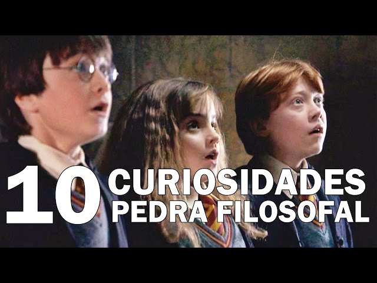
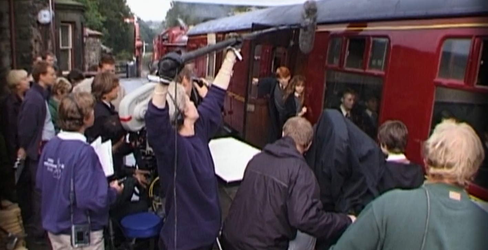
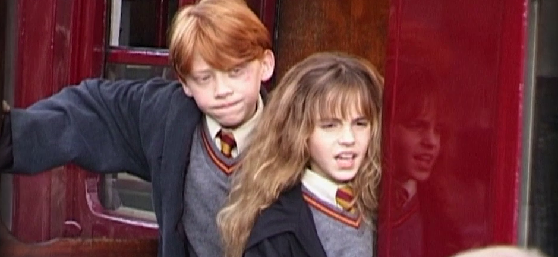
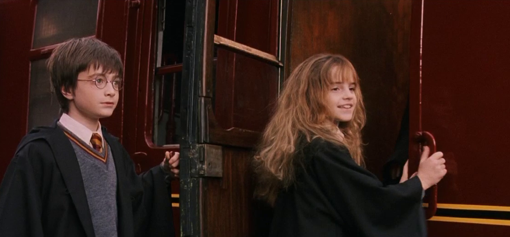
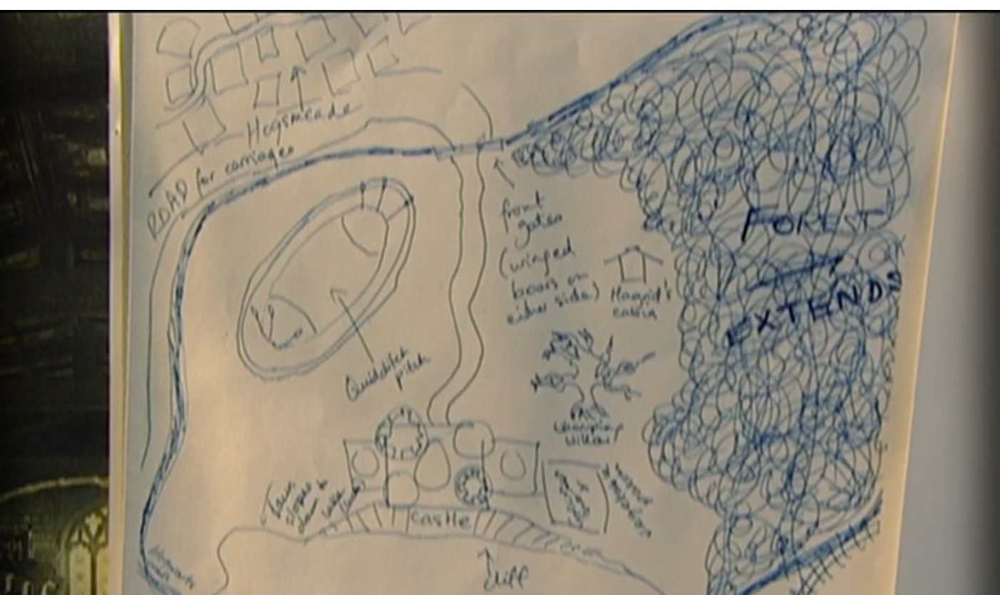
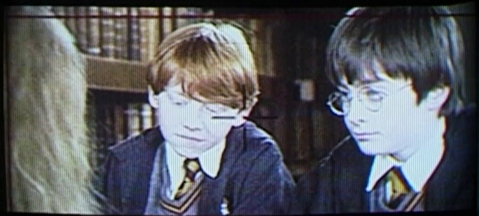

10 curiosidade sobre a produção de Harry Potter e a Pedra Filosofal
Em comemoração dos 20 anos do início do universo cinematográfico de Harryy potter, confira algumas, curiosidades da produção do primeiro filme.
Este é um exemplo de CSS embutido.
p {
color: blue;
font-size: 16px;
}
Artigos / 5 curiosidades sobre a produção de Harry Potter e a Pedra Filosofal
Em 2021, comemoramos os 20 anos do lançamento de Harry Potter e a Pedra Filosofal. filme que deu início a uma das séries mais bem sucedidas da história do cinema. Somente o primeiro filme arrecadou mais de US$1 bilhão ao redor do mundo.
E para celebrar o aniversário do início do universo cinenmatográfico de Harry Potter, separamos 10 curiosidades sobre a produção de Harry Potter e a Pedra Filosofal.
1 - O Primeiro dia de gravação
Não é novidade para ninguém que no cinema as gravações são relalizadas fora de ordem, visando sempre uma otimização logística do tempo, cenários.. E com Harry Potter não foi diferente.

A primeira cena filmada do loga-metragem é exatamente a última cena do filme: a despedida de Hagrid na plataforma do Expresso de Hogwarts.
No roteiro, ela era a cena 165 e a gravação foi um grande laboratório para a equipe, pôde descobrir o que funcionaria ou não no filme, e modificá-las a tempo, antes de da sequência ás gravações.
"Você tem os olhos de sua mãe"
Qualquer fã da saga sabe que talvez o maior "erro" dos filmes seja o fato dos olhos de Harry no cinema não serem verdes.
Assim como nos livros. E isso seria apenas um detalhe que passaria despercebido, não fosse a ênfase que diversos personagens dão ao longo da história de que os olhos do personagem são parecidos com os de usa mãe.
Na verdade,a produção tinha intenção de fazer o Daniel Radclife usar lentes de contatos verdes, porém o ator teve uma reação alérgica no set e então decidiram manter os olhos azuis do ator.

Na última cena do filme, quando Harry se despede de Hagrid, é possível ver que seus olhos etão inchados e lacrimejando, o que parace condizer com carga emocinal da cena.
Porém, produtor David Heyman revelou que isso foi causado pelo uso das lentes.
Os dentes de Hermione
Outra alteração realizada após a primeira diária de gravação foram os dentes Hermione. Já que nos livros a personagem tem seus dentes projetados para frente, a equipe preparou uma prótese dentária para Emma Watson.

Os dentes falsos foram utilizados nessas primeiras cenas gravadas, mas logo o diretor Chris Colombus percebeu que o efeito dos dentes na tela não valia o esforço, e optou por não utiliza-los mais em nenhuma outra cena.
O problema é que algumas cenas já estavam gravadas - e refazê-las não era umap possibilidade, já que custaria alguns milhões de dólares.
A equipe de efeitos visuais reduziu, então, na pós-produção o tamanho das próteses da personagem, fazendo com que os dentes falsos paracessem com o da atriz.

A construção de Hogwarts
Antes na pré-produção do filme, a esquipe se reuniu com JK Rowling e pediu para que ela fizesse um esboço da disposição dos ambientes em Hogwarts - a floresta proibida, o castelo, o campo de quadribol, o lago negro, Hogsmeade...
Foi a partir desse mapa, então que o diretor de arte Stuart Craig deu início ao seu trabalho na construção de Hogwarts.

Outro detalhe foi que tanto A pedra Filosofal quanto A Câmera Secreta foram os filmes da saga que mais utilizaram locações reais. Por conta do orçamento inicial da série. a equipe precisou poupar na construção de alguns cenários, e alternativa foi relaizar as gravações em locais que paracessem com Hogwarts, como o castelo de Alnwick, a Universidade de Oxford e a Catedral de Durham.
Gravação multicâmera
Por conta da inexperiência dos atores, muitos estavam atuando pela primeira vez, o diretor Chris Columbus conta que na gravação da cena da primeira aula de voo em vassoura, assim que disse "ação", metade do elenco continou parado sem saber o que fazer. Ele precisou, então explicar que sempre que dissesse "ação", significaria que as câmeras estariam rodando e que a atuação deveria comecar.

E para lidar com essa inexperiência do elenco e cobrir qualquer distação das crianças durante alguma tomada, o diretor de fotografia John Seale rodava até três câmeras simultaneamente, cobrindo vários ângulos da ação. Graças a isso, mesmo em uma cena simples de diálogo percebemos que o filme apresenta muitos cortes, alternando rapidamente do close de um ator para o outro.